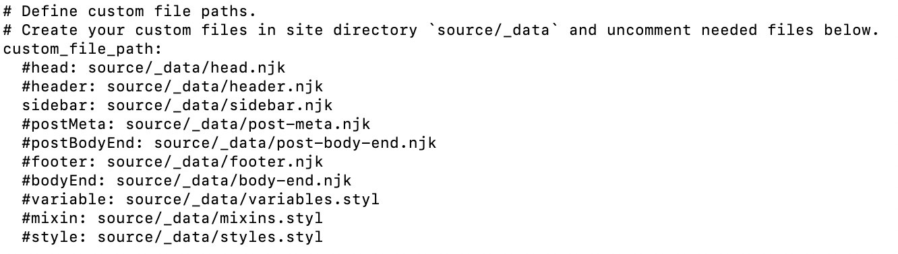
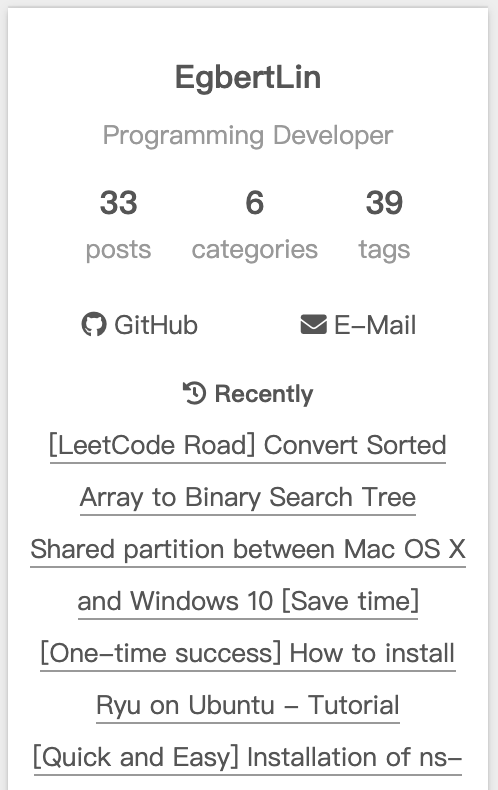

How to add recent posts to Next theme（v8.x.x）
If you have managed your blog for a long time, maybe you want to reach high impression, you can append Recent Post to sidebar. Viewers can see it whatever the article they read.
Create Custom File:
In the /blog/source/ path, establish _data/sidebar.njk file under source/ directory, and add contents into sidebar.njk as below:
1 | <!-- recent posts --> |
Custom File Support [1]
In /blog/themes/next, open theme config file (_config.yml) and use custom_file_path key word to search the section. Then, uncomment the sidebar: source/_data_sidebar.njk as below: 
Modify the theme config file (_config.yml)
Let add some contents to enable this function. So open _config.yml and add three line: 1
2
3recent_posts: true
recent_posts_title: Recently
recent_posts_layout: block
Redeploy your blog
After deploying the blog, you will see recent posts successfully. 
References:
[1] https://theme-next.js.org/docs/advanced-settings/custom-files.html?highlight=sideb